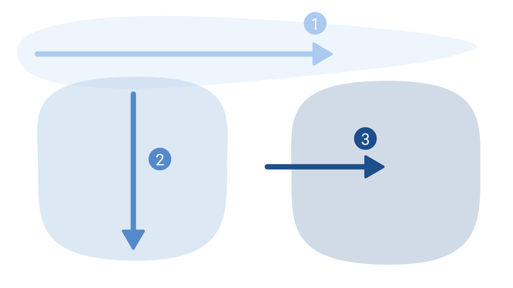
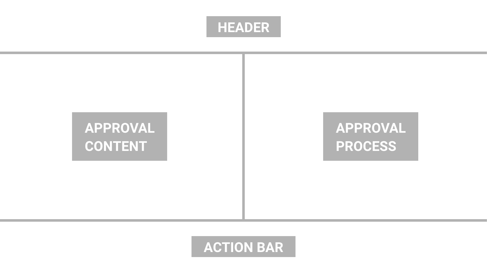
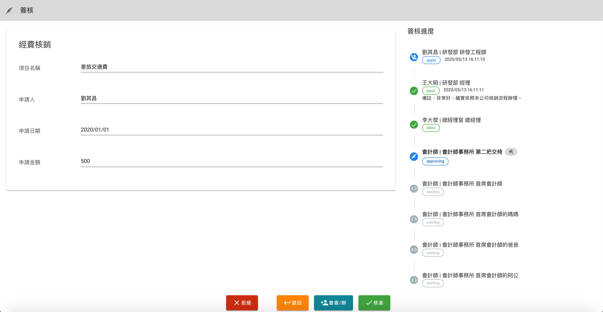
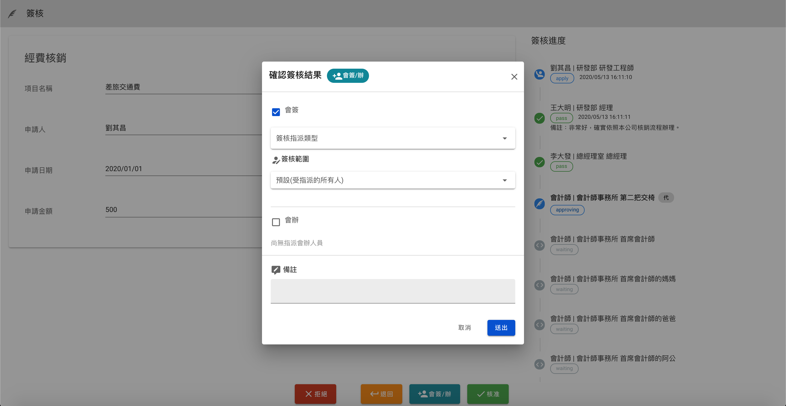
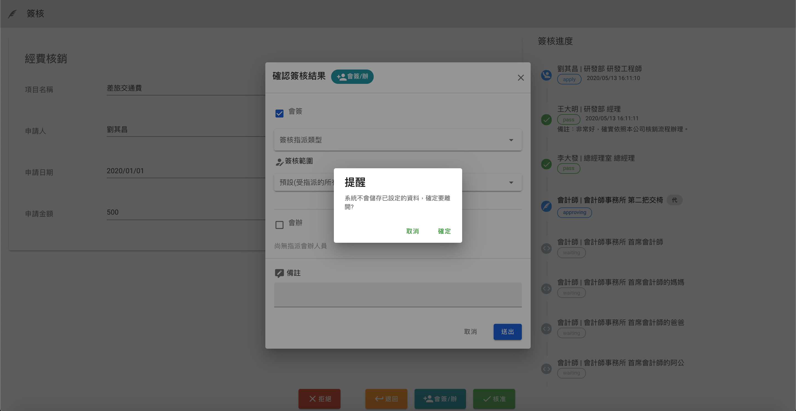
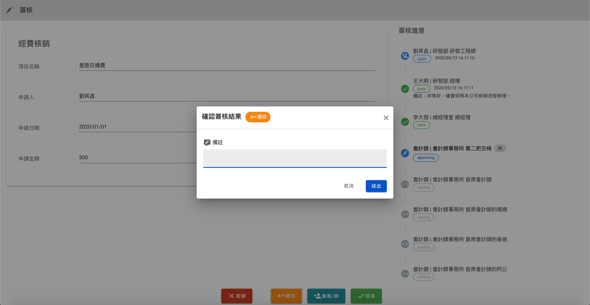
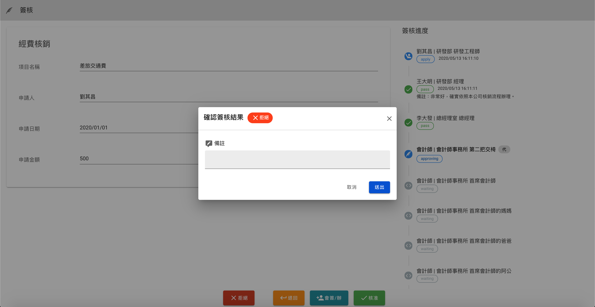

Description
2020年
簽核的UI及功能模組，是為了公司產品的需求而開發。我們針對有電子表單或電子化流程需求的客戶，設計出直覺且便利使用的簽核功能。
負責項目
UI/UX設計
網頁前端
目標
1. 同時瀏覽「待簽核的表單內容」與「簽核紀錄」，讓當層簽核者可以參考之前簽核者的意見，可以進行有效率的決策；
2. 顯示即時的簽核狀態，讓簽核者與申請者都能掌握簽核進度；
3. 提供「會簽」與「會辦」的功能，讓簽核者可以即時尋求外部建議；
4. 行動裝置也能夠順暢使用。
使用者視覺移動
根據NN/g的“Eyetracking research" ，在「沒有特別突出的內容」、「想盡快找到閱讀目標」等前提下，人們在網頁(或行動裝置)的視線移動為「F模式」，這對使用者來說是最直覺的視線移動。
簽核頁面的內容單純，需要呈現的僅有「簽核內容」、「簽核歷程」與「動作按鈕」，因此便以最直覺的F模式，作為頁面佈局設計的依據。
視線移動與範圍
頁面佈局設計
使用者流程圖 (User Flow)
顧客旅程圖（Customer Journey Map）
在主要的頁面中，會有許多資訊被同時顯示在同一層級的畫面中，為了設計出符合「簽核者」的需求的佈局和步驟，採用了具有時序性的顧客旅程圖， 以此假設若我是一個主管層級的簽核者，再進入到這個頁面之後（甚至包含進入頁面之前的情境），關鍵的動作和期待：

設計與成果
介面設計總覽
簽核CTA-「同意」互動Modal
中斷編輯動作的提醒
簽核CTA-「退回」互動Modal
簽核CTA-「拒絕」互動Modal
RWD手機尺寸(375Ｘ812)介面
因應空間限制，簽核內容與歷程以Tabs的方式顯示，主要CTA互動視窗同樣以Modal顯示
後記
挑戰
Persona的困境
由於不曾接觸過「簽核」這項任務，因此對於真正使用者的需求不甚了解。花了不少時間，把主管當作使用者，進行使用者訪談。 藉由訪談，整理出他認為過去所使用過的簽核系統的可改進之處，有了這些資料，還需要花費心思把資料彙整成「資訊」。
「User Story」無法判斷使用者需求的重要性
許多時候，前端或後端工程師習慣以「User Story」整理出使用者需求。往往到了最後，每一個User Story的功能重要性都相同，差別僅在於開發的優先順序。 但對於設計者來說，撇除功能，更應該以佈局、顏色、幾何形狀等設計方法，以區別不同資訊和功能的重要性。除了照顧到使用者的情緒，也必須確保我們能幫助他順利完成每一個步驟。
成長
「顧客旅程圖」的實作與實踐
透過閱讀James Kalbach 所著的《Mapping Experiences》，學到了各種提升產品價值與了解使用者需求的圖像種類與製作方法。在這個專案上選擇了顧客旅程圖(Customer Journey Map, CJM)，有兩個原因：
1. CJM 具有時序性，可以將討論的焦點集中在一特定的任務流程中；
2. CJM 兼顧對使用者情緒的假設與呈現，可以藉以區別各個開發需求之間的重要性。